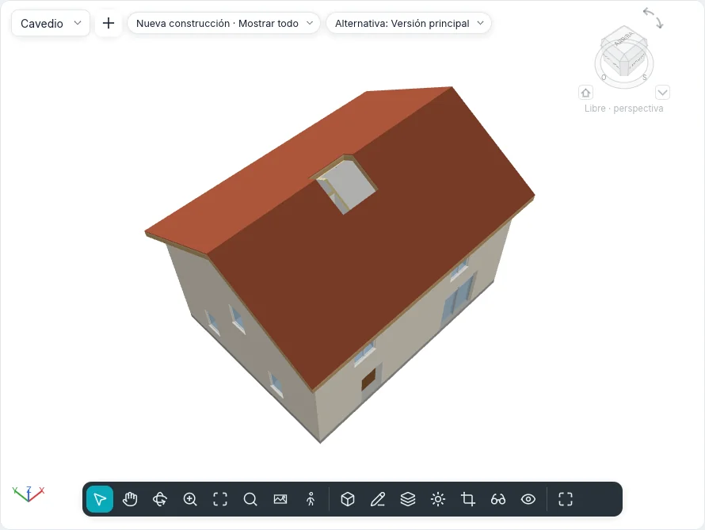

Huecos
El grupo Huecos de las fichas Modelar y Estructura abre agujeros que nada rellena: en suelos, cubiertas y falsos techos (Por cara, Vertical, Buhardilla), a través de varios niveles a la vez (Patinillo) y en muros (En muro). Las cinco herramientas tienen los mismos nombres en los dos estilos de interfaz y en el modo táctil, y la línea de comandos también las ejecuta.
Un hueco es un elemento propio: se selecciona, se modifica, se desplaza y se borra como cualquier otro, y va adonde va su anfitrión. Un bucle dibujado dentro del boceto propio de un suelo, una cubierta o un falso techo sigue siendo un hueco del contorno de ese elemento, como antes.
Huecos en suelos, cubiertas y falsos techos
| Herramienta | Cómo corta |
|---|---|
| Por cara | Perpendicular a la cara elegida: en una cubierta inclinada los lados del agujero siguen la pendiente, a través de todas las capas |
| Vertical | A plomo, a través de todo el elemento, sea cual sea su pendiente |
| Buhardilla | A plomo a través de la cubierta principal, dentro del contorno elegido en los muros y la cubierta de la buhardilla |
- Inicia la herramienta en una planta (un plano de techo para los falsos techos) o en una vista 3D. Iniciada en una sección o un alzado, Ir a vista ofrece las plantas.
- Pasa el cursor sobre el elemento: se resalta en naranja. Con Por cara, pulsa TAB para elegir su cara inferior en lugar de la superior (en 3D, la cara que señalas desde abajo es la inferior). Buhardilla solo ofrece cubiertas.
- Haz clic en él. Se abre el modo de boceto, Crear contorno de hueco, con el grupo Dibujar: Línea, Rectángulo, Seleccionar líneas y las demás formas. Buhardilla solo ofrece Seleccionar bordes de cubierta/muro: solo se resalta lo que puede delimitar una buhardilla (la cara lateral de un muro, la cubierta de la buhardilla, un suelo, un borde de la cubierta principal). Elige las caras interiores de los muros de la buhardilla y su cubierta: las líneas no tienen que encontrarse, el hueco que delimitan se ve discontinuo, cortado a plomo a lo largo de los muros y hasta donde la cubierta principal sube por encima de la cara inferior de la cubierta de la buhardilla. Los sigue cuando los muros se mueven o las cubiertas cambian.
- Dibuja bucles cerrados y luego Finalizar modo de edición. Las líneas abiertas o que se cruzan se rechazan con un mensaje, y el boceto sigue abierto.
Un bucle que cruza el borde del elemento lo recorta; un bucle del todo fuera no corta nada y se deja fuera, con un mensaje.
Un suelo, una cubierta o un falso techo seleccionado tiene también Hueco ▸ Vertical en su ficha contextual: el boceto se abre en él enseguida, sin elegirlo de nuevo.
Patinillos
Patinillo corta todos los suelos, cubiertas y falsos techos entre dos alturas.
- Inicia Patinillo en una planta (o en 3D, en el nivel activo). Se abre el modo de boceto, Crear boceto de hueco de patinillo.
- Con Línea de contorno elegida, dibuja el contorno del patinillo como bucles cerrados (Rectángulo, Línea, Designar muros…).
- Con Línea simbólica elegida, dibuja las líneas que se muestran con el patinillo en las plantas, por ejemplo sus dos diagonales.
- Haz clic en Finalizar modo de edición.
El patinillo empieza en el nivel de la planta en que se dibujó y llega al nivel siguiente hacia arriba (sin un nivel encima, mide 3 m de alto). Corta las losas solo dentro de su altura: una losa en la que se detiene conserva la parte por encima o por debajo de él. Los muros, las escaleras, los pilares y los componentes no se cortan.
Cada planta cuyo plano de corte está dentro de la altura del patinillo muestra su contorno y sus líneas simbólicas; la planta de un suelo que corta muestra el agujero. Es un solo elemento: desplazado en una planta, se desplaza en todos los niveles.
Seleccionado en una sección, el patinillo aparece como una caja transparente: arrastra las flechas de arriba y de abajo para cambiar su altura; cerca de un nivel se detienen en él.
| Propiedad | |
|---|---|
| Nivel de base, Desfase en la base | Dónde empieza el patinillo |
| Nivel superior | Un nivel, o Sin conexión |
| Desfase en la parte superior | Solo con un nivel superior |
| Altura libre | Solo sin conexión |

Huecos en muros
En muro corta un rectángulo a través de todas las capas de un muro, también curvo.
- Abre un alzado o una sección que vea el muro, o una vista 3D. Desde una planta, Ir a vista ofrece los alzados y las secciones.
- Haz clic en el muro: se resalta en naranja. Los muros cortina no se ofrecen.
- Haz clic en una esquina y luego en la opuesta. El rectángulo sigue al cursor con su tamaño y sus distancias al inicio y a la base del muro; el hueco se crea con el segundo clic y queda seleccionado.
En un muro curvo el agujero sigue el arco. En planta el muro se corta donde el plano de corte atraviesa el hueco, sin remates de las capas.
Seleccionado en un alzado o una sección, el hueco tiene cuatro pinzamientos en sus bordes: arrástralos para cambiar su tamaño; arrastra dentro de él para desplazarlo a lo largo de su muro (nunca lo abandona). Desplazar, copiar o borrar el muro se lleva sus huecos. Para un agujero redondo o poligonal, usa en su lugar Editar contorno del muro.
Sus propiedades son las de un patinillo, más Anchura y Altura.
Propiedades, tablas y archivos
Cada hueco tiene Comentarios y Marca, y muestra Fase de creación y Fase de derribo de su anfitrión, de solo lectura. Por cara, Vertical y Buhardilla muestran también su Anfitrión y cómo cortan (Corte).
El Área y el Volumen de suelos, cubiertas, falsos techos y muros excluyen los huecos, en
Propiedades, en las tablas de planificación y en la tabla de materiales. La exportación IFC
escribe cada corte como un IfcOpeningElement que vacía a su anfitrión (un patinillo da uno a
cada elemento que corta); la importación IFC convierte de nuevo los huecos que ninguna puerta ni
ventana rellena en huecos de sus suelos y muros.
Visibilidad y gráficos lista Huecos de patinillo, con Líneas simbólicas, y Huecos entre las categorías de modelo.
En la línea de comandos: shaft, wallopening, faceopening, vertopening y dormeropening
(consulta Línea de comandos y MCP).
Todavía no en BIMopen
Los huecos en vigas, arriostramientos y pilares estructurales, una zapata corrida interrumpida bajo un hueco de muro, los patinillos a través de sólidos topográficos y los huecos en cubiertas por extrusión llegan con esos elementos.